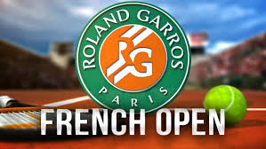

The French Open (French: Championnats Internationaux de France de Tennis), also called Roland-Garros, is a major tennis tournament held over two weeks at the Stade Roland-Garros in Paris, France, beginning in late May. The venue is named after the French aviator Roland Garros. It is the premier clay court tennis championship tournament in the world and the second of the four annual Grand Slam tournaments,[4] the other three being the Australian Open, Wimbledon and the US Open. The French Open is currently the only Grand Slam tournament held on clay, and it is the conclusion of the spring clay court season. Before the Australian Open and the US Open were converted into hardcourt, the French Open was the lone non-grass tournament. [5] Between the seven rounds needed for a championship, the slow-playing surface and the best-of-five-set men's singles matches, the event is widely considered to be the most physically demanding tennis tournament in the world.